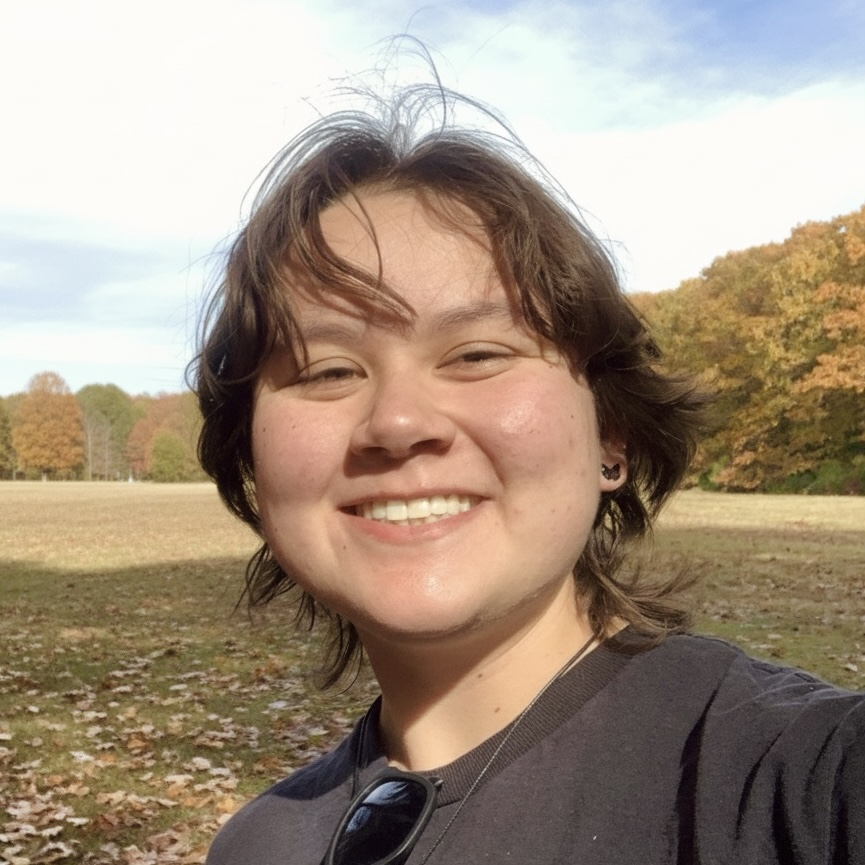

I build end-to-end AI systems covering data pipelines, APIs, fine-tuning LLMs, and system deployment. I have research experience in neural network architecture design and LLM optimization for local inference.
After graduating this spring with a double major in CS:AI and Philosophy, I'm working full time in a 1 year Post-Bacc role at the Davis Institute for Artificial Intelligence.
Proficient: Python, C, SQL, HTML/CSS
Familiar: Bash, Java, C#, JS
TensorFlow, PyTorch, scikit-learn, vLLM, LiteLLM, Ollama, Hugging Face, DCNNs, RNNs, RAG, fine-tuning
Git/GitHub, Docker, tmux, FastAPI, PostgreSQL, Claude Code, Hermes
I regularly program on macOS, Windows 11, and Linux (Fedora 44 & WSL). Thank goodness for containers and dotfiles.
Hired as a CS teaching assistant after my first semester in college, I've since held research and engineering roles continuously: from two years of computational neuroscience research in the OWLab to independent LLM-based research at the Davis Institute, where I'm currently a fellow.
A living glossary cataloguing bleeding-edge AI research with end-to-end data pipelines and LLM-powered data extration.
A chatbot leveraging a custom LLM inference system utilizing a guardian model and vector database. Options for both API-based and local inference.
ML pipeline from model inference to data persistence and visualization using FastAPI, Hugging Face Transformers, PostgreSQL, and Docker.
TensorFlow-based custom neural net design library for building, training, and testing models for heading perception tasks.
B.A. in Computer Science: AI concentration & Philosophy